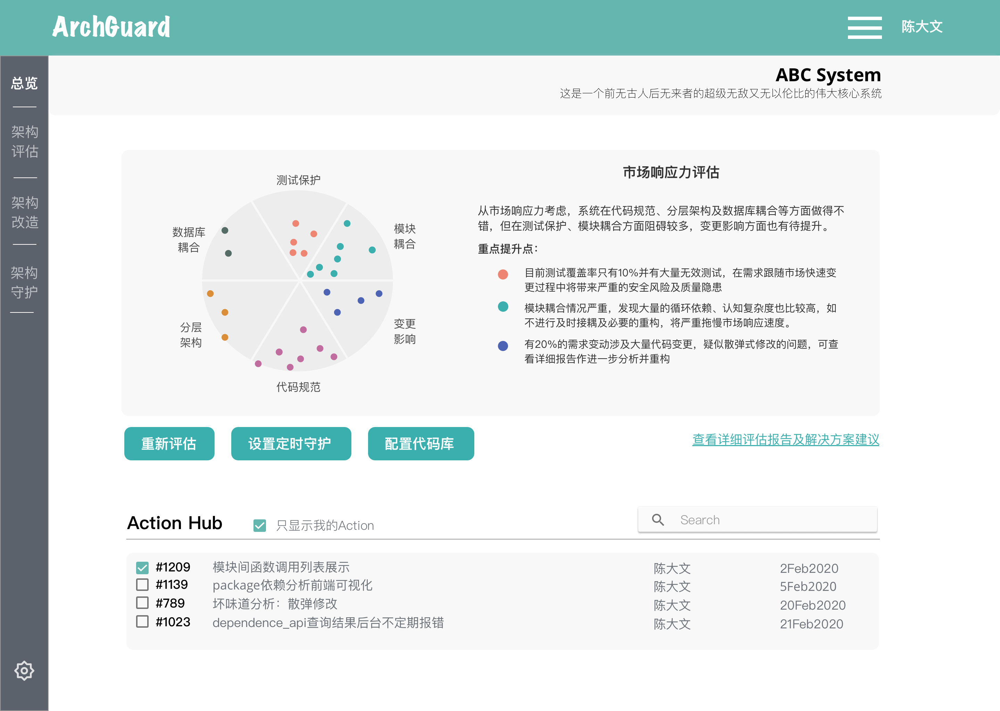
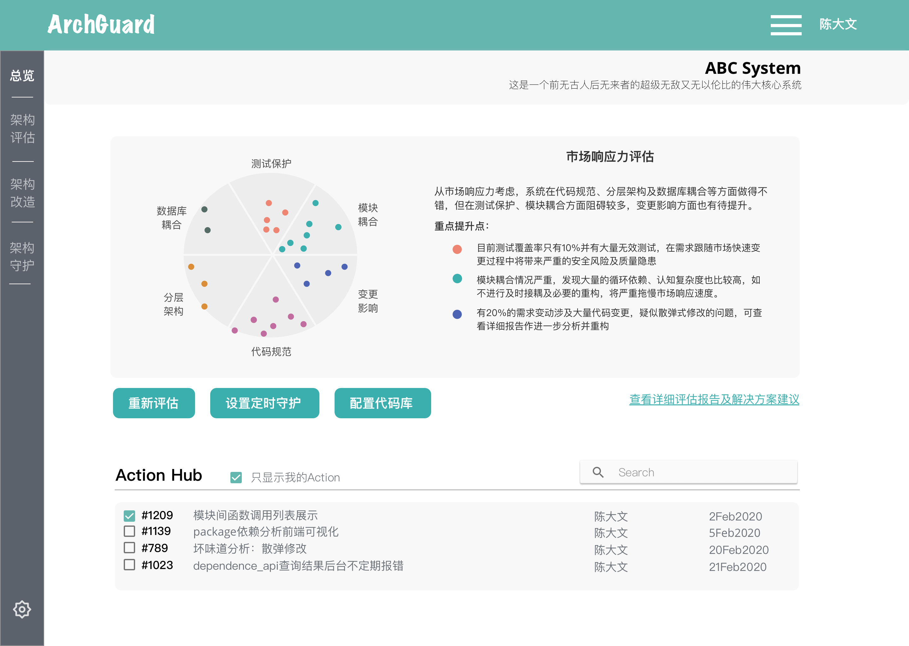
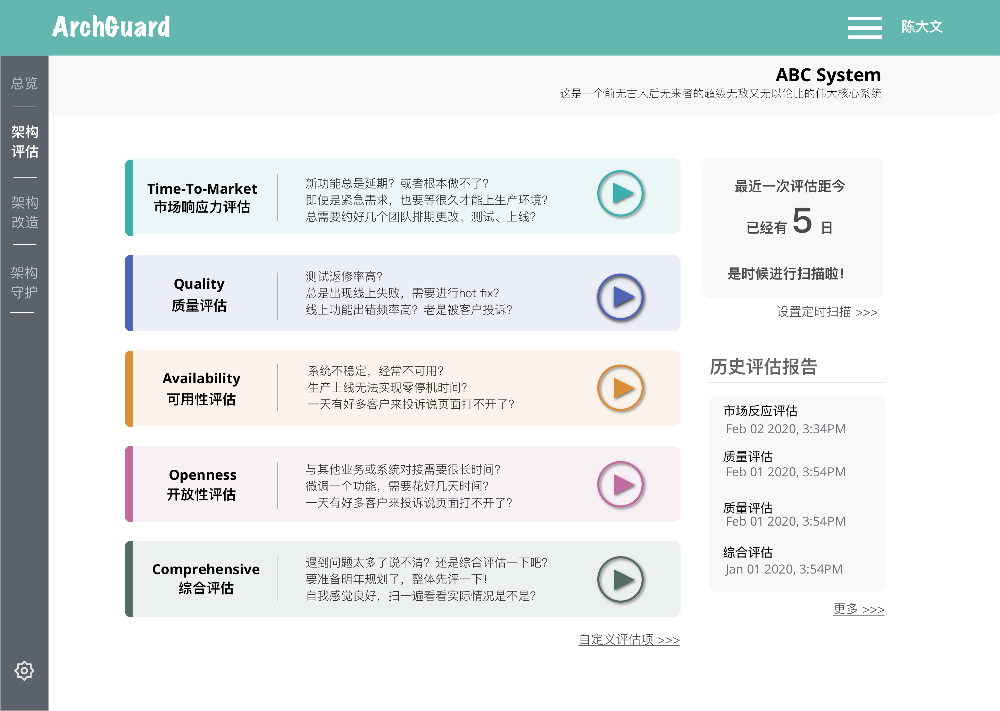
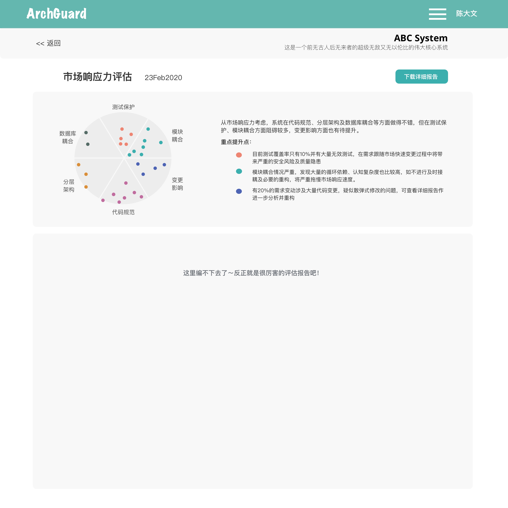
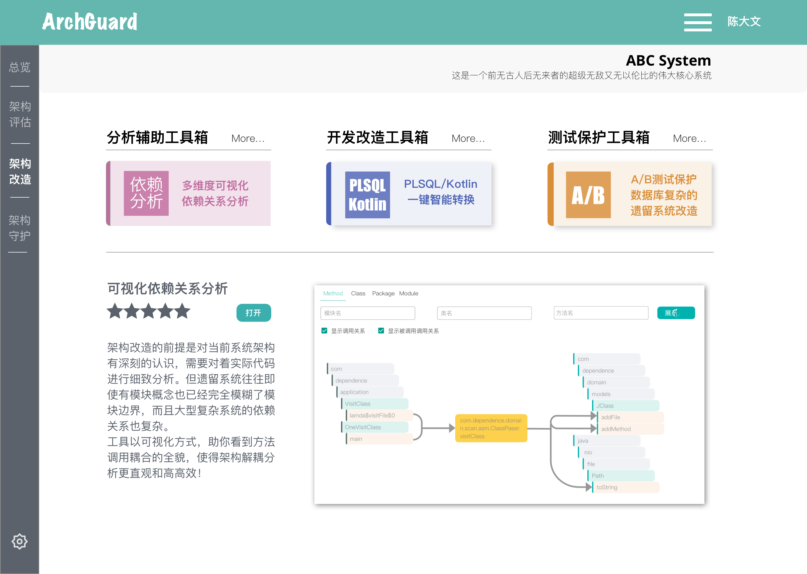
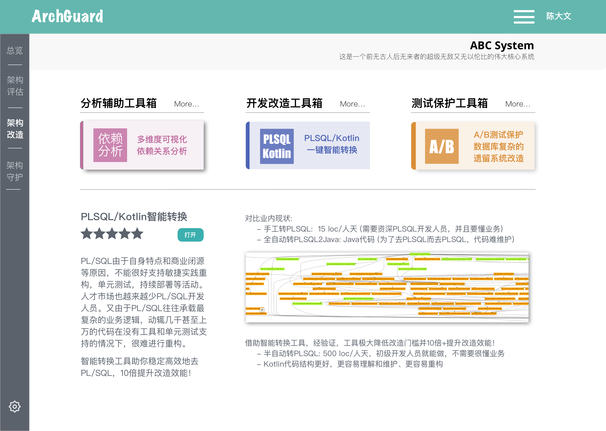
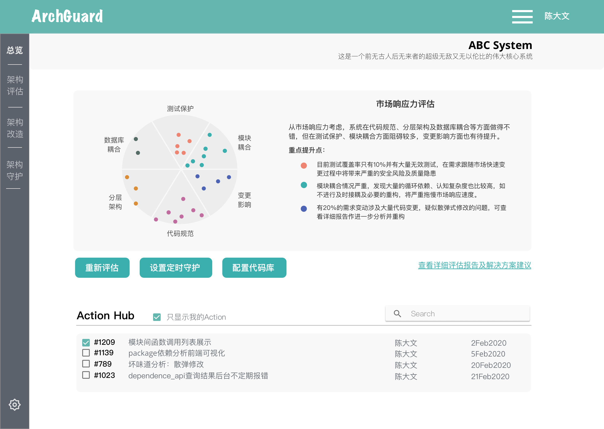

它可以
帮助您持续的守护系统，减缓系统腐化
ArchGuard支持个性化配置标准，在系统全生命周期及时预警，及时纠偏，以减缓系统腐化
 

沉淀了我们遗留系统现代化改造经验，向您提供遗留系统现代化全过程中策略定制，改造工具，以及演进架构的帮助
帮助您精准的做投资决策，提高投资性价比
ArchGuard以业务价值为导向，对系统的项目的各个方面进行扫描评估，助力用户找到系统存在的薄弱环节
 帮助您做高效的改造系统，降低改造门槛
通过多年ThoughtWorks改造经验总结，ArchGuard基于您系统的问题，向您推荐最适合的改造工具（自研/三方），自动，高效，安全的进行改造
 帮助您持续的守护系统，减缓系统腐化
ArchGuard支持个性化配置标准，在系统全生命周期及时预警，及时纠偏，以减缓系统腐化
